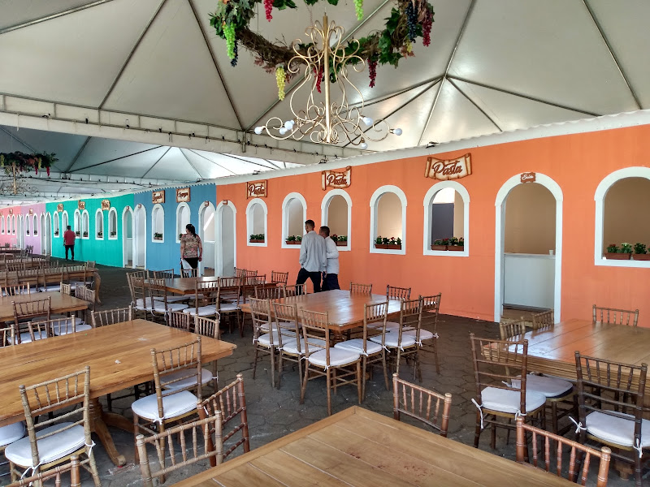

Nova Veneza
Nova Veneza de Goiás realiza seu 17º Festival Italiano Quatro dias de festa intensivamente alegres de 1° a quatro de junho com uma gastronomia de dar água na boca. Assim foi o 17° Festival Gastronômico Italiano de Nova Veneza. De acordo com a organização do evento, cerca de 120 mil pessoas visitaram o festival em 2023. Aqueles que marcaram presença no acontecimento, em sua grande maioria, pode perceber o reconhecimento dos venezianos aos desbravadores que, transformaram o arraial de Guaianazes em uma cidade com um jeito italiano de ser. Hoje Nova Veneza com mais de onze mil habitantes  e com 63 anos de emancipação política, está a cada dia evoluindo a passos largos rumo ao crescimento econômico, cultural, turístico e geográfico. A intensidade das apresentações faz com que o festival não fique com pausa entre uma e outra apresentação. São exibições de corais de estudantes, apresentações da companhia de dança típica Ítalo-brasileiro da cidade de Nova Veneza do Estado de Santa Catarina. Diversos cantores que interpretam canções em português, inglês e italiano. Nas stands a comida típica italiana, é servida aos visitantes a noite na quinta e sexta, no sábado durante o dia e a noite e domingo o dia todo encerrando as 19 horas com o tradicional panelaço. Os visitantes já se deslumbram com o evento logo na chegada, vendo toda a estrutura física armada. São dezenas de tendas que cobrem as ruas em Volta da praça da matriz.
O Prefeito Ademar Costa afirmou que dos 17 festivais, 16 foram realizados por ele e sua equipe, com o apoio de parceiros empresário da rede privada e governo de Goiás. Na quinta dia 1° a abertura foi com o neto de italianos o cantor Sergio Reis. Na sexta feira os tenores do Brasil abrilhantaram o festival com as canções italianas. E o tempo todo os artistas locais e regionais se apresentaram, não deixando a festa perder seu brilho e motivação. Neto de italianos da “gema” que vieram para o Brasil pós segunda guerra mundial, o cirurgião dentista Dr. Gean Carlo Motão falou do orgulho de ser morador de Nova Veneza, participar das festividades em homenagem aos seus antepassados e poder receber tantas pessoas de lugares diferentes de Goiás e Brasil. A advogada e fonoaudióloga Dr. Ana Cláudia Motão vê o festival como um regate da história daqueles que vieram de sua terra natal. O cirurgião dentista Dr. José Cláudio Motão acredita que a festa é o reforço do elo entre brasileiros e italianos.
O dançarino Ricardo Moranza da companhia de dança Italobrasileiro, fala da satisfação em participar de uma festa tão distante de sua cidade, Nova Veneza do Estado de Santa Catarina. Responsável pela tradição culinária do evento, a masterchefe Vania Alves disse que esse ano foi de superação. Outras atrações que envolve os presentes são o desfile de carnaval de Veneza, uma representação de um dos carnavais mais antigos do mundo que é apresentado no sábado pelas ruas onde o festival acontece. No domingo quando o visitante pensa que acabou, acontece outra atração que também desperta a admiração das pessoas, o tradicional panelaç  A visita do governador de Goiás ao festival italiano aconteceu no último dia, domingo, quando o governador Ronaldo Caiado foi homenageado. Nova Veneza é constituída das seguintes famílias de descendentes de italianos: Stival, Peixoto e Motão.
A visita do governador de Goiás ao festival italiano aconteceu no último dia, domingo, quando o governador Ronaldo Caiado foi homenageado. Nova Veneza é constituída das seguintes famílias de descendentes de italianos: Stival, Peixoto e Motão.